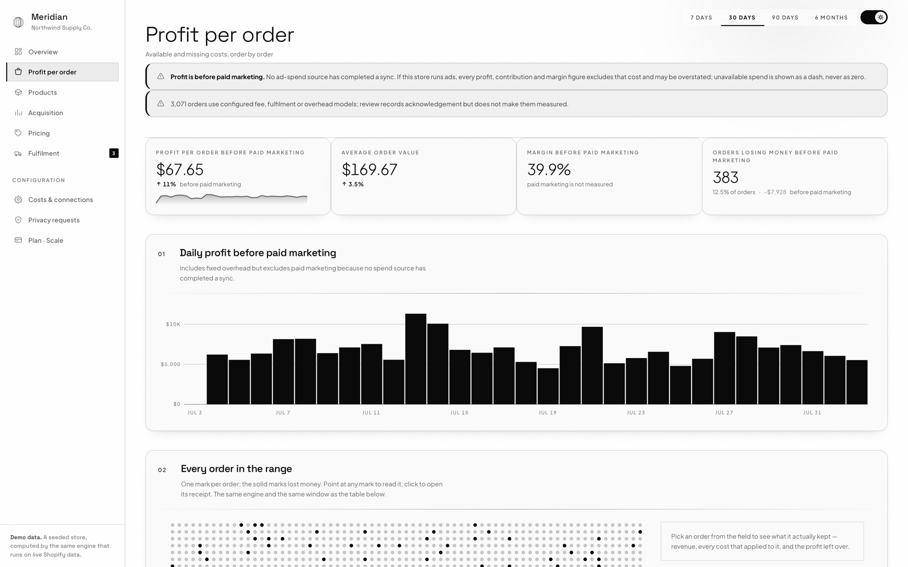
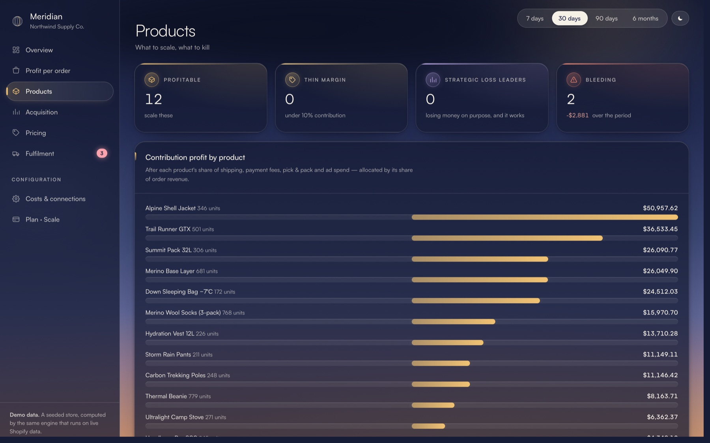
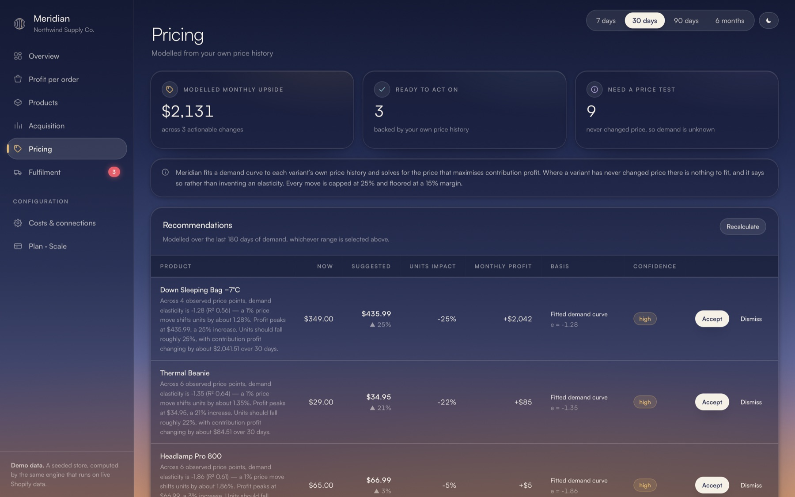
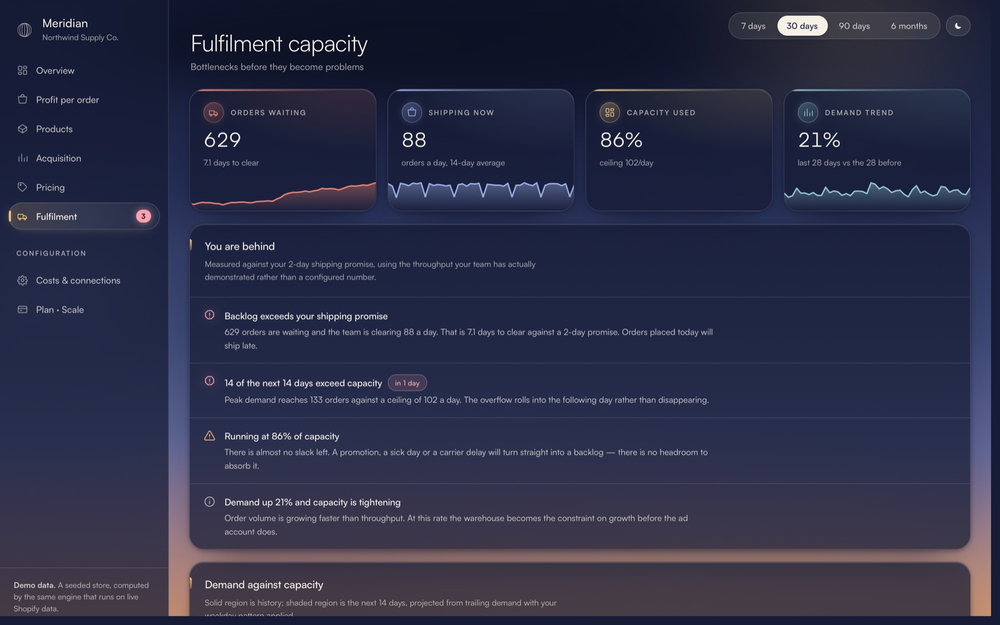

See what each sale left you.
See revenue after product cost, shipping, payment fees, refunds and overhead.
See what each order really kept after product cost, shipping, fees, refunds and overhead. Find the losses hiding inside your sales.
Join the waitlist for launch updates and early-access eligibility.
MyMeridian surfaces the orders where product cost, shipping, fees, refunds or overhead consume the sale — before those losses disappear inside a healthy-looking revenue total.
This illustrative order shows how MyMeridian separates measured and configured costs from unavailable ad spend. An unsynced source stays unavailable — not $0.
See your real profit, find where it disappears and focus on what needs attention first.
See revenue after product cost, shipping, payment fees, refunds and overhead.
Surface losing orders and weak products before they disappear into a healthy-looking sales total.
Use your sales history to prioritize pricing opportunities and fulfilment pressure.
Orders, products, pricing and fulfilment — each view answers a question you can act on.




See revenue, costs and profit on one line. Sort by weakest margin to find the orders quietly costing you money.
See which products are earning, breaking even or losing you money — then focus on the ones that need a cost, price or operational decision.
MyMeridian learns from price changes after install. If the history is not there yet, it says so instead of guessing.
Compare incoming demand with the throughput your team has already demonstrated, so a shipping risk arrives with notice.
If MyMeridian cannot see a cost or the history it needs, it says so.
Until a paid source is connected and synced, profit stays labelled before paid marketing.
Products without a recorded cost are marked incomplete, not called profitable.
MyMeridian waits for a price change it can see before suggesting the next one.
MyMeridian reads orders, products, fulfilments and inventory. It cannot change a product, price or order.
Plans appear on your Shopify bill. MyMeridian never handles your card number.
Your store’s data stays isolated, and any missing input is shown instead of guessed.
Starter tells you what happened. Growth shows what needs attention. Scale brings that view across your business.
Know your real profit.
Find what is costing you money — and what to do next.
Run profitability across a larger business.
The details that matter, without the sales pitch.
Shopify’s variant cost field supplies COGS. You set shipping, fees, pick-and-pack and overhead rules; missing costs are marked incomplete.
Yes, after a Meta, Google or TikTok source is connected and synced. Until then, profit is shown before paid marketing.
The first sync includes 60 days of Shopify orders. More history requires Shopify approval.
No. MyMeridian has read-only access and cannot edit prices, products or orders.
After MyMeridian sees a price change following install. It waits for that history rather than guessing, and changes are capped at 25%.
Monthly and annual plans are billed through Shopify. Eligible merchants receive any launch benefit through their verified waitlist account when an offer is available.
Join the waitlist for launch updates and early-access eligibility.